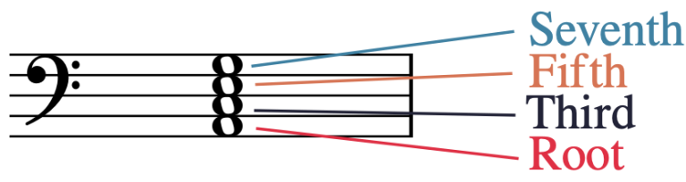
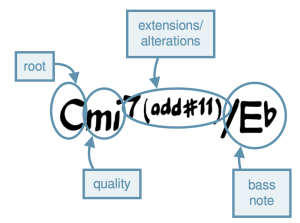
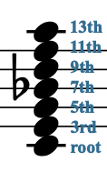
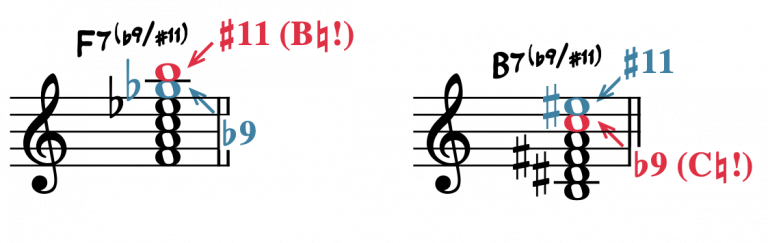
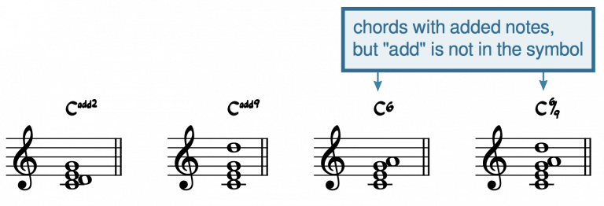

七和弦、扩展音与和弦符号
三和弦再叠一个三度得到七和弦。掌握五种核心七和弦（maj7、7、m7、m7♭5、dim7），彻底读懂和弦谱上的 sus、add、6、9、斜线符号，并用只弹 1-3-7 的“壳和弦（Shell Voicing）”讲清一切复杂和声。
1. 全局地图
2. 逐个概念
① 五种核心七和弦的结构与色彩
- 是什么
- 大三 + 大七 = maj7（1 3 5 7，梦幻舒展）；大三 + 小七 = 7 属七（1 3 5 ♭7，含 3 与 ♭7 三全音，推进最强）；小三 + 小七 = m7（1 ♭3 5 ♭7，柔和温暖）；减三 + 小七 = m7♭5 / ø7 半减七（1 ♭3 ♭5 ♭7，悬疑）；减三 + 减七 = dim7 减七（1 ♭3 ♭5 𝄫7，完全对称，每隔 3 品重复！）。
- 为什么需要
- 流行、爵士、布鲁斯、城市流行（City Pop）的和声骨架全都建立在这五种七和弦上。
- 在指板上
- 记熟：
Cmaj7 = C E G B、C7 = C E G B♭、Cm7 = C E♭ G B♭、Cm7♭5 = C E♭ G♭ B♭、Cdim7 = C E♭ G♭ B𝄫(A)。 - 听起来
- 常见误解
- “C7 就是 C 大调的 7 度，是大七度。”大错！和弦符号的默认规则是：光写数字 7 一律指小七度（♭7），大七度必须写 maj7 或 Δ7。
② 吉他神技：壳和弦（Shell Voicings：1-3-7）
- 是什么
- 只弹根音、三音和七音三根弦，故意省略纯五度 5 音（极少数遇到 ♭5 或 ♯5 才保留 5 音）。
- 为什么需要
- 3 音决定大小、7 音决定七和弦性质，而 5 音几乎不提供识别信息！省掉 5 音让左手瞬间解放，还能在高音两根弦轻松做出“前一个和弦的 7 音半音下降到下一个和弦的 3 音”的引导线。
- 在指板上
- 6 弦根音 A7：
5-x-5-6-x-x（A-G-C♯）；接 5 弦根音 D7：x-5-4-5-x-x（D-F♯-C）→ A7 的 G(5) 半音跌到 D7 的 F♯(4)，同时 C♯ 跌到 C！ - 听起来
- 常见误解
- “壳和弦少了 5 音听起来会缺一块。”恰恰相反，乐队和独奏时 1-3-7 是最立体、不抢频段的专业伴奏声部。
③ 扩展音（9/11/13）与 add / sus 区分
- 是什么
- 把高八度的 2、4、6 叠在七和弦上方叫扩展音（9、11、13）。重要法则：写
C9默认包含 ♭7（1 3 5 ♭7 9）；写Cmaj9含大七（1 3 5 7 9）；写Cadd9不含七音（1 3 5 9）。而Csus2/Csus4则是用 2 或 4 彻底替换掉 3 音。 - 为什么需要
- 在指板上弹一遍对比：Cadd9 有明亮的大三度 E；Csus2 拿掉 E 换成 D，变成既不大也不小的悬浮感。
- 在指板上
- 流行吉他经典走线：
C → Cmaj7 → C7 → C6，高音或内声部正好是一条 C→B→B♭→A 的半音阶下行线。 - 听起来
- 常见误解
- “C6 和弦是三和弦加高八度 13 音，一定和 C13 一样。”C13 必须含 ♭7（属七色彩），C6 没有七音，且组成音 C E G A 和 Am7 完全一致。
④ Hendrix 和弦（7♯9）与斜线和弦
- 是什么
E7♯9= E–G♯–B–D–F𝄪（听起来像小三度 G）。同时拥有大三度（G♯）与小三度听感（♯9），正是布鲁斯摇滚的灵魂摩擦音！- 为什么需要
- 斜线和弦
A/B读作“A 和弦配 B 低音”。B 若在 A 和弦内就是转位（如 G/B）；若不在（如 D/C、F/G），则是极具现代流行色彩的复合低音结构。 - 在指板上
- Purple Haze 按法：
x-7-6-7-8-x（5 弦 7 品 E、4 弦 6 品 G♯、3 弦 7 品 D、2 弦 8 品 F𝄪/G）。 - 听起来
- 常见误解
- “7♯9 里按的是小三度，为什么不写 7♭10？”按和声拼写，三音席位已经给了大三度 G♯，剩下的张力音只能占 9 度的席位叫 ♯9（F𝄪）。
3. 交互指板与伴奏实验室
点下方预设快速切换把位与音阶/和弦；点任意一格都能发声，开启持续音即可直接对着指板练习即兴与听辨。
4. 上琴练习
- 6/5 弦四类七和弦指型（65 BPM）：在 A(6弦5品) 与 D(5弦5品) 各自按出 maj7、7、m7、m7♭5 四种七和弦，只用改变 1 根手指感受差异。重点验证：按节拍稳定、说得出级数与音名。
- 壳和弦 1-3-7 连接（75 BPM）：只弹 3 根弦走 A7–D7–E7 与 Am7–D7–Gmaj7，耳朵盯紧 3 音和 7 音怎么半音交接。重点验证：按节拍稳定、说得出级数与音名。
- 10 个复杂符号实战解码（用 Oolimo 检验）：抄写 10 个流行/爵士谱的复杂符号，写出组成音后再在指板按出一个顺手把位。重点验证：按节拍稳定、说得出级数与音名。
- 内声部半音下行线（60 BPM）：连续弹 C–Cmaj7–C7–C6（或 Am–Am(maj7)–Am7–Am6），清楚弹出高音/中音的半音下降线。重点验证：按节拍稳定、说得出级数与音名。
5. 分歧点对照
| 容易混淆的两面 | 核心区别 | 实战怎么选 |
|---|---|---|
| C7 vs Cmaj7 | 1 3 5 ♭7 vs 1 3 5 7 | 写 7 默认小七度（属七推动）；写 maj7 才是大七度（稳定主和弦） |
| C9 vs Cadd9 vs Csus2 | 含 ♭7+9 vs 无7含3+9 vs 无3含2 | 三者听感完全不同，Cadd9 明亮流行，C9 蓝调放克，Csus2 悬浮中性 |
| Cm7♭5 vs Cdim7 | 小七度 B♭ vs 减七度 B𝄫(=A) | m7♭5 是小调 iiø7；dim7 全小三度对称，每移 3 品音集完全不变 |
6. 读原资料指南
- OMT: Seventh Chords ↗ — 精读五种七和弦构造与三全音特性 已嵌入下方全文
- OMT: Chord Symbols & Jazz Voicings ↗ — 搞定所有现代流行/爵士符号缩写规则 已嵌入下方全文
- Oolimo Guitar Chord Analyzer ↗ — 交互反查指板按法命名
📖 本地精要（免跳转直接看：Oolimo 和弦分析器核心用法（已内置于本站指板页））
- 【本站直接平替】无需跳转外网，直接在本站「指板与五度圈」选择任意根音与 25 种和弦类型，切到“级数”视图即可查看每个品格的 1/3/5/7/9 角色与实战把位指型。
七和弦Seventh ChordsOMT · 七和弦
Seventh Chords七和弦
- A seventh chord is a four-note chord whose notes can be arranged in thirds. A seventh chord can always be "stacked" so that its notes are either on all lines or all spaces.七和弦是四个可以按三度向上堆叠的音构成的和弦，排在紧凑雪人阵型中时同样要么全在线上、要么全在间上。
- When a seventh chord is stacked in thirds, the lowest note is called the root, the lower middle note is called the third, the upper middle note is called the fifth, and the highest note is called the seventh, which is sometimes called the "chordal" seventh to distinguish it from the seventh scale degree.从下往上数四个音依次称为根音、三音、五音，以及最高处的七音（常特称“和弦七音”，避免与音阶 7 级混淆）。
- There are five common qualities of seventh chord. These qualities are the major-major seventh chord, major-minor seventh chord, minor-minor seventh chord, half-diminished seventh chord, and fully diminished seventh chord.五种常见七和弦的学名是：大大七、大小七、小小七、半减七与全减七（减七）和弦。
- There is another common way of naming seventh chords: the major-major seventh chord is also often called the major seventh chord, the major-minor seventh chord is also often called the dominant seventh chord, the minor-minor seventh chord is also often called the minor seventh chord, and the fully diminished seventh chord is also often simply called the diminished seventh chord.另一套流行更广的叫法把前三种简称为大七（maj7）、属七（dominant 7）、小七（m7），并把全减七简称为减七和弦。
- Within major and minor keys, seventh chords have particular qualities that correspond to scale degrees. These are the same in every major and minor key, which makes memorizing them useful.与三和弦一样，大小调音阶各级上生成的七和弦性质也是固定公式，背下来受用无穷。
- Seventh chords are identified by their root, quality of triad and seventh, and inversion.分析七和弦同样抓三要素：根音、三和弦+七度的性质，以及转位状态。
In this chapter, we will focus on seventh chords: four-note chords whose notes can be stacked into thirds.本章聚焦四音三度堆叠构成的七和弦。
Open Music Theory · 七和弦（Seventh Chords）。原文作者：Chelsey Hamm。Open Music Theory, Version 2，CC BY-SA 4.0。中文为本站翻译，以英文原文为准。
七和弦构造Seventh ChordsOMT · 七和弦
Seventh Chords七和弦构造
Like triads, the notes of a seventh chord can always be arranged in thirds, on adjacent lines or spaces of the staff. If a triad in closed spacing looks like a snowperson, then a seventh chord in closed spacing (as in the second measure of Example 1) looks like an extra-long snowperson, with a bottom, two middles, and a head.七和弦同样可以写成紧凑的三度叠加，在五线谱上仿佛一个“加长版雪人”（底球 + 两个中球 + 头顶的球，见例 1 第 2 小节密集排列）。
Example 1. A seventh chord written melodically and harmonically.例 1. 分解和柱式写法的七和弦。

Like in a triad, the lowest note of a seventh chord stacked in closed spacing is called the root, and the other notes are named for their generic intervals above the root, as shown in Example 2: the third, the fifth, and the seventh.原位最底层仍是根音，上面三个音按各自到根音的泛指度数命名为：三音、五音和七音（例 2）。
Open Music Theory · 七和弦（Seventh Chords）。原文作者：Chelsey Hamm。Open Music Theory, Version 2，CC BY-SA 4.0。中文为本站翻译，以英文原文为准。图片版权：Chord members © Megan Lavengood is licensed under a CC BY-NC-SA (Attribution NonCommercial ShareAlike) license；Dmaj © Megan Lavengood is licensed under a CC BY-NC-SA (Attribution NonCommercial ShareAlike) license；Abdim7 © Megan Lavengood is licensed under a CC BY-NC-SA (Attribution NonCommercial ShareAlike) license
五种核心七和弦性质与命名体系Seventh Chord Qualities and NomenclatureOMT · 七和弦
Seventh Chord Qualities and Nomenclature五种核心七和弦性质与命名体系
Example 3 lists the five most common qualities of seventh chord: major-major, major-minor, minor-minor, half-diminished, and fully diminished. These qualities are determined by two factors:例 3 总结了最常见的五种七和弦：大大七、大小七、小小七、半减七和减七，由以下两个成分共同确定：
- The quality of the triad created by the root, third, and fifth (shown in the second column)底部的三和弦性质（根+三+五音）
- The quality of the seventh from the root to the seventh (shown in the third column)根音到七音之间的七度音程性质
A chord symbol for a seventh chord begins with the letter name of the triad's root followed by an indication of the quality of its triad and seventh. Examples of chord symbols for different seventh chord qualities are given in the last column of Example 3.[1]其和弦符号从大写根音开头，随后标明性质，如例 3 最后一列示范：[1]
| Seventh chord quality七和弦全称与俗称 | Triad quality底部三和弦性质 | Seventh (interval) quality根音至七音的七度 | Example chord symbol记谱符号示范 |
|---|---|---|---|
| Major-major seventh chord (Major seventh chord)大大七和弦（大七和弦） | major triad大三和弦 | major seventh大七度 | Fma7Fma7 |
| Major-minor seventh chord (Dominant seventh chord)大小七和弦（属七和弦） | major triad大三和弦 | minor seventh小七度 | F7F7 |
| Minor-minor seventh chord (Minor seventh chord)小小七和弦（小七和弦） | minor triad小三和弦 | minor seventh小七度 | Fmi7Fmi7 |
| Half-diminished seventh chord半减七和弦 | diminished triad减三和弦 | minor seventh小七度 | F∅7F∅7 |
| Fully diminished seventh chord (Diminished seventh chord)全减七和弦（减七和弦） | diminished triad减三和弦 | diminished seventh减七度 | Fo7Fo7 |
Example 3. Summary of nomenclature for different qualities of seventh chord.例 3. 七和弦五种核心性质总表。
For the first three qualities of seventh chord, the first word describes the quality of the triad, and the second word describes the quality of the seventh:前三种七和弦的传统两字学名非常直观——第一个字指底部三和弦，第二个字指根音到七音的七度：
- major-major seventh chord = major triad + major seventh大大七 = 大三和弦 + 大七度
- major-minor seventh chord = major triad + minor seventh大小七 = 大三和弦 + 小七度
- minor-minor seventh chord = minor triad + minor seventh小小七 = 小三和弦 + 小七度
The other two qualities are both built on diminished triads but differ in the quality of the seventh:另两种都建在减三和弦上，区别在于顶上七度大小：
- half-diminished seventh chord = diminished triad + minor seventh半减七 = 减三和弦 + 小七度（相当于少“减”了一半）
- fully diminished seventh chord = diminished triad + diminished seventh全减七 = 减三和弦 + 减七度
Music theorists often use the names described above, but there is also another common way of naming these chords, given in parentheses in the first column of Example 3:流行、爵士与现代乐谱最常用括号里的习惯叫法：
- The major-major seventh chord is also often called the major seventh chord.大大七常直接简称大七和弦（major seventh chord）。
- The major-minor seventh chord is also often called the dominant seventh chord.大小七因为主要担当属和弦功能，常被称为属七和弦（dominant seventh chord）。
- The minor-minor seventh chord is also often called the minor seventh chord.小小七简称为小七和弦（minor seventh chord）。
- The fully diminished seventh chord is also often simply called the diminished seventh chord.全减七简称为减七和弦（diminished seventh chord）。
- The half-diminished seventh chord does not typically have an alternate name.半减七和弦（m7♭5 / ø7）没有其它进一步缩写名。
Your instructor may have you label these chords using one set of terminology or the other, or a mix of both.你的老师或参考谱例可能会混用两套名字，两套都要熟悉。
Example 4 summarizes all this information in music notation.例 4 用五线谱直观对比了以上全部五种七和弦的音程构型：
Example 4. The qualities of sevenths and triads in various seventh chord types.例 4. 各种七和弦的三和弦底色与七度跨度对照。
Sometimes dominant seventh chords have chromatic alterations (e.g. the "augmented" seventh chord); you can read more about this in Altered and Extended Chords. Don't forget that when the root of a seventh chord has an accidental, you add that accidental into its name. For example, B♭mi7 is the chord symbol for a seventh chord with a B♭ minor triad and a minor seventh. Likewise, a G♯ma7 is the chord symbol for a seventh chord with a G♯ major triad and a major seventh.属七和弦有时会做变化音改造（例如增五音，详见 变化与扩展属和弦）。别忘了根音若带升降直接带上就行（如 B♭mi7、G♯ma7）。
In chord-symbol notation, if a pitch class other than the chord's root is the lowest note in a seventh chord, then a slash is added, followed by a capital letter denoting the pitch class in the bass (lowest) voice. Example 5 shows a G half-diminished seventh chord (G∅7). In the first measure, the chord appears in first position; in the second measure, the chord's seventh (F) is in the bass voice, so the chord symbol is written as G∅7/F. This topic will be explored more in the chapter Inversion .和弦符号里如果最低音不是根音，同样加斜杠写出低音。比如例 5 右侧的 G∅7/F 就是把七音 F 放到最低音上的 G 半减七和弦。
Example 5. Two seventh chords.例 5. 原位与七音在低音的两个七和弦。
[1] These chord symbols reflect those used in Open Music Theory, but you may come across others in your studies. See Chord Symbols for a more thorough explanation of these variations.实际出版物或吉他谱里常见 Cmaj7 / CΔ7、Cm7 / C-7、Cm7♭5 等多种等价记法（下一章展开对照）。
Open Music Theory · 七和弦（Seventh Chords）。原文作者：Chelsey Hamm。Open Music Theory, Version 2，CC BY-SA 4.0。中文为本站翻译，以英文原文为准。
和弦标记符号Chord SymbolsOMT · 和弦标记符号
Chord Symbols和弦标记符号
- Chord symbols tell you the root of the triad, the quality of the triad, any extensions to the triad, and any non-root bass note.和弦符号紧凑地告诉你四样东西：三和弦的根音、性质、超出三和弦的扩展音，以及非根音时的最低音。
- Chord symbols don't reference a specific key. Instead, symbols are always assumed to be a certain quality unless otherwise indicated:和弦符号本身不绑定具体调性，它全靠一套严格的默认规则省去冗余文字：
- Triads are assumed to be major.只写字母时，三和弦默认是大三和弦。
- Sevenths added to the triad are assumed to be minor.直接加数字 7、9、11、13 时，七音永远默认是小七度（♭7）。
- All other extensions and added tones are assumed to be major/perfect.其它更高扩展音和加音（9、11、13、6）默认是大音程或纯音程（大九、纯十一、大十三、大六）。
- Alterations are shown through sharp and flat symbols, or through plus and minus symbols. Both systems are prevalent in the real world; when writing your own charts, pick one system and stick with it consistently. This textbook will use the sharp/flat system of showing alterations.任何偏离默认音程的变化用 ♯/♭ 或 +/- 表示（自己手写总谱时请统一用同一套记号，本教材采用 ♯/♭）。

There are two systems of shorthand for discussing harmony used in this textbook: chord symbols and Roman numerals. Chord symbols are also sometimes called “lead sheet symbols” because you will find them on lead sheets, which are jazz scores that typically notate only a melody and these chord symbols.教材分析常用两套速记体系：和弦符号（Chord symbols）与罗马数字。和弦符号常写在流行/爵士简谱/Lead Sheet 主旋律上方。
Chord symbols can pack a lot of information into a few letters. A complex symbol is given in Example 1, with annotations to show the various possible components of a chord symbol.正如例 1 所示，哪怕只有几个字母，一个和弦符号也能打包进极为精准的和声信息。
Open Music Theory · 和弦标记符号（Chord Symbols）。原文作者：Megan Lavengood。Open Music Theory, Version 2，CC BY-SA 4.0。中文为本站翻译，以英文原文为准。图片版权：Lead sheet components © Megan Lavengood is licensed under a CC BY-SA (Attribution ShareAlike) license；Extensions © Megan Lavengood is licensed under a CC BY-SA (Attribution ShareAlike) license；Altered extensions © Megan Lavengood is licensed under a CC BY-SA (Attribution ShareAlike) license；Added notes © Megan Lavengood is licensed under a CC BY-SA (Attribution ShareAlike) license；Sus chords © Megan Lavengood is licensed under a CC BY-SA (Attribution ShareAlike) license
爵士声部中的省略音策略Omitting NotesOMT · 爵士声部排列与连接
Omitting Notes爵士声部中的省略音策略
Jazz harmonies often contain many notes, thanks to the common practice of extending the harmonies. It often wouldn’t be desirable for all these notes to be given equal weight in the voicing, so it’s common to omit some notes when voicing these extended harmonies.爵士和弦动辄叠到五六个音，一把吉他或两只手既不可能全按进去、听感上也会过于浑浊，因此刻意省略某些声部是核心技巧。
The most common note to omit is the fifth of the chord. Because the fifth is an early pitch in the harmonic series (partial 3), it tends to strengthen the root of the chord without adding much character on its own. Listen and compare the various chords in Example 2, and notice that removing the fifth does very little to alter the overall sound of the chord, whereas omitting the seventh or root alters the sound substantially!**最优先、最常见被省略的是五音（5th）。**因为在泛音列中纯五度是紧随八度出现的第 3 泛音，本身极其接近并融化在根音的共鸣里，几乎不额外带来独立色彩。对比试听例 2 就知道：拿掉 5 音，和弦味道基本不变；拿掉 3 音或 7 音，和弦特性立刻垮掉！
Example 2. Omitting the fifth is common, as it does not substantially alter the sound. The seventh and root are hardly ever omitted.例 2. 省略纯五度极少改变色彩，而省略三音/七音彻底改变性质。
Omitting the root runs the risk of destabilizing the entire chord. However, if there is a bass player in the performing ensemble, you may deliberately omit the root in the other voices. The bassist will typically provide the root of the harmony and ensure that the chord sounds stable. The last chord in Example 2, then, would sound just fine if a bassist were playing a G below that voicing.正常情况下省略根音会让人抓不准调性中心；但如果乐队里有贝斯手或低音键手负责稳稳踩住根音，吉他手和钢琴手就可以故意完全省掉根音（Rootless Voicing 无根和弦），把宝贵的手指全分配给 3–7 骨干音与 9/13 彩色延伸音！
When dealing with extended chords, it becomes possible or desirable to omit other members of the chord besides the fifth, but it is difficult to generalize here. Usually, omitting tones is done to avoid excessive dissonance with other important chord members.碰到高延伸音时，也可以把容易半音碰瓷的音（比如大三和弦上的纯十一音）安全略去。
Open Music Theory · 爵士声部排列与连接（Jazz Voicings）。原文作者：Megan Lavengood。Open Music Theory, Version 2，CC BY-SA 4.0。中文为本站翻译，以英文原文为准。
平滑声部连接原则Smooth Voice LeadingOMT · 爵士声部排列与连接
Smooth Voice Leading平滑声部连接原则
We have been discussing harmonies as vertical entities so far: as a stack of notes that go bottom-to-top on the page. Vertical thinking is used a lot in music theory and by pianists and guitarists, but for almost everyone else, music is experienced horizontally: as a sequence of notes in time. It’s important for musicians to be able to think of music both vertically and horizontally through voice leading.吉他手练 CAGED 横按时极易形成“整只手大把块搬家”的垂直思维——每个和弦彼此独立、硬生生跳来跳去。但真正高级的伴奏是兼顾垂直和声与横向声部流动的，这就叫声部连接（Voice Leading）。
Voice leading in jazz and many other styles should generally be smooth—that is, voices should ideally move as little as possible when going to a new chord (except the bass, which often leaps). Smooth voice leading helps different chords sound more logically connected (Example 3). When writing your own chord progressions, it may be helpful to imagine your voices as lazy: they want to move as little as possible! The smallest possible move is the common tone: not moving at all, but instead remaining on a single tone that is common to both chords. The next most preferable movement is movement by whole or half step. Skips (movement by third) are also easy to perform and easy to sing, and there are many situations that will force you to skip when voice leading.爵士与流行伴奏的第一准则就是“除了低音（Bass）可以跳五度/四度，上面几根弦的内声部要极尽偷懒之能事！”能不动就留着当共同音（Common tone）；非动不可优先只移动半音或全音；三度小跳也可接受（例 3）。记住：“你的每一个指尖声部都必须懒惰！”
Leaps are primarily used to provide contrast and excitement in voice leading. They are to be used sparingly, and with good reason. Leaps sound most natural when they are within a single chord: because the chord underpinning the horizontal movement is staying the same, it’s easy for the voice to leap within that chord. When the chord is changing, though, adding leaps tends to make the chords sound disconnected and can make the piece difficult to perform. Leaping over a chord change is certainly possible, but it may take extra practice, and remember: your voices are lazy!同一个和弦保持时内部跳进换把位听起来自然灵动；但一旦和弦本身换根音，上面全部音齐刷刷大幅度同向大跳就会让人觉得生硬断裂。
Example 3. Smooth voice leading helps chords sound connected to one another.例 3. 就近不动的平滑声部连接让和弦推进极其顺滑。
Open Music Theory · 爵士声部排列与连接（Jazz Voicings）。原文作者：Megan Lavengood。Open Music Theory, Version 2，CC BY-SA 4.0。中文为本站翻译，以英文原文为准。
扩展音（9、11、13）ExtensionsOMT · 和弦标记符号
Extensions扩展音（9、11、13）

Jazz harmony often involves not only playing the notes explicitly indicated by the chord symbol, but also adding upper extensions. The term extension comes from the idea of extending the stack of thirds that creates harmonies. The seventh is the most common triadic extension, but jazz often makes use of higher extensions—stacking more and more thirds onto the basic triad results in the ninth, eleventh, and thirteenth (Example 4).爵士和声不仅包含根-三-五-七，还常往上继续加扩展音（Extensions）——沿着三度雪人继续向上加出 9 音、11 音与 13 音（例 4）。
Interval size为什么叫 9、11、13 而不叫 2、4、6？
You may notice that ninths, elevenths, and thirteenths are just compound versions of seconds, fourths, and sixth, respectively, so why use the more difficult-to-conceptualize compound intervals, instead of just calling these intervals seconds/fourths/sixths? There are two reasons:你马上会发现 9、11、13 其实就是 2、4、6 度的复音程。之所以非得用复音程命名，有两大原因：
- The presence of an extension in a chord symbol implies the presence of all other extensions below it as well. So, an eleventh chord is not just a triad plus the eleventh—it's a triad plus an eleventh, ninth, and seventh.[1]第一，符号写出高位扩展音时，默认把下面的七音及中间层扩展音也一并包含进来（例如 C11 = 三和弦 + ♭7 + 9 + 11，绝不只是加一个 11 音）！[1]
- Extensions are often voiced (played) above the other chord members. In other words, in actual performed music, the extension really sounds a thirteenth above the root, not a sixth (for example).第二，在真实爵士编曲与声部里，实际按法（voicing）通常会把这些高音摆在比基干音高的八度上方，让它确实在 9/13 度的空间位置发声。
Interval quality and alterations to extensions扩展音的默认性质与变音规则
While the default quality of the seventh is minor, extensions and additions are assumed to be major (ninths and thirteenths) or perfect (elevenths) unless otherwise indicated. The chord in Example 4, then, is simply a C13 chord: all the extensions are major/perfect intervals above C, except the seventh (B♭), which is minor.唯独七音默认是小七度（♭7）；9、11、13 这些扩展音全都默认按大音程（大九、大十三）与纯音程（纯十一）来算（所以例 4 的 C13 里 B♭ 是小七，而 D、F、A 全是大/纯音程）。
Other interval qualities are shown with sharp and flat symbols that raise or lower the default pitch by a half step. So, a C7(♯11) chord would include an F♯ above the root—an augmented eleventh—instead of the typical F♮.若需要偏离默认性质，就用 ♯/♭ 符号把该音升高/降低半音——比如 C7(♯11) 就是把默认纯 11 度 F 升高半音换成增十一度 F♯。

Note that in this context, these symbols are to be interpreted relatively. So, ♯11 really means "raise the eleventh" and ♭9 really means "lower the ninth"—as Example 5 shows, the altered note will not necessarily be a sharp or flat pitch. This is discussed more below under "Chord Symbols vs. Roman Numerals."注意这些升降号是相对变化记号：♯11 意味“把十一度升高半音”，♭9 意味“把九度降低半音”。比如在 E7(♭9) 上，九度本来是 F♯，降了半音变成 F♮（还原 F，谱上写的是还原号而不是降号！）。
For clarity, always write "7" before listing altered extensions. Furthermore, altered extensions often placed in parentheses, so that a performer can easily see that the accidental is to be applied to the extension, not to the root of the chord. If multiple altered extensions are used, slashes might also be used to clearly delineate the alterations, as shown in Example 5.书写带变化延伸音时，先写清“7”再括号列出变化音（如 C7(♭9/♯11)），避免看成根音带有升降。
[1] Although all the extensions below the highest extension are implied, they are not necessarily played. In fact, usually all the possible notes are not played, and some of the extensions between the highest and the seventh are omitted. The differences between what is notated, what is understood, and what is actually played are discussed more in the chapter on Jazz Voicings.虽然理论上写出 13 意味着下面包含 7、9、11，但在吉他与钢琴实战上往往会刻意省略冲突音（例如 C13 几乎必省纯 11 度 F，因为它与大三度 E 仅差半音刺耳打架），细节见 爵士声部配置 一章。
Open Music Theory · 和弦标记符号（Chord Symbols）。原文作者：Megan Lavengood。Open Music Theory, Version 2，CC BY-SA 4.0。中文为本站翻译，以英文原文为准。图片版权：Lead sheet components © Megan Lavengood is licensed under a CC BY-SA (Attribution ShareAlike) license；Extensions © Megan Lavengood is licensed under a CC BY-SA (Attribution ShareAlike) license；Altered extensions © Megan Lavengood is licensed under a CC BY-SA (Attribution ShareAlike) license；Added notes © Megan Lavengood is licensed under a CC BY-SA (Attribution ShareAlike) license；Sus chords © Megan Lavengood is licensed under a CC BY-SA (Attribution ShareAlike) license
加音（add）与挂留（sus）Added Notes (add) and Suspensions (sus)OMT · 和弦标记符号
Added Notes (add) and Suspensions (sus)加音（add）与挂留（sus）
add加音记号（add）

To indicate that a note is added to a chord without implying a seventh underneath, the word "add" is written into the symbol. Cadd9, for example, is a C-major triad with a D voiced above the triad, but without any seventh: C–E–G–D. (Recall that C9 otherwise implies a minor seventh added to the C triad as well: C–E–G–B♭–D.) You can also add notes within a triad: Cadd2 indicates a C-major triad with an additional D that is voiced inside the triad: C–D–E–G.要想在三和弦上纯粹多添一个修饰音、同时不要包含七音，就要写入“add”。Cadd9 = C–E–G + 高八度的 D（绝不含 B♭）；而 Cadd2 常常直接把 D 夹在三和弦内声部 C–D–E–G。
In the case of an added sixth, we simply use the numeral 6 without “add”—for example, a C major triad with an added sixth is written as C6. There are two reasons why this is acceptable (and normal) shorthand: one, the added sixth is especially common, and two, there is no possible interpretation that one might confuse it with. Another common addition to triads is the sixth and ninth together, which is also indicated without the word "add": for example, C69.唯有“加六度”习惯省去 add 直接写作 C6（如 C–E–G–A），以及同时加六度九度的 C69（C–E–G–A–D），因为六度毫无歧义不会和七度弄混。
sus挂留记号（sus）
Another alteration is the suspended chord, abbreviated "sus," which indicates that the third of the chord should be replaced with another interval above the root (Example 6). The term comes from a common type of suspension, in which the fourth above the bass resolves to the third above the bass. Indeed, a sus chord will often be followed by a non-sus chord with the same root (though this is not required by any means).挂留记号“sus”表示用根音上方的其它音彻底取代原有的三音（不再有三音！），源自对位声部先悬留 4 音再解决回 3 音的惯例（所以很多 sus4 后面习惯跟回同根音的大三和弦）。
The default assumption is that the third of the chord is replaced with a perfect fourth above the root. Csus, then, would yield the notes C–F–G—the E of the C triad is replaced with F.只写 Csus 时默认是 sus4（用纯四度 F 取代 E → 组成 C–F–G）。
Occasionally, you may see a sus2 chord, which replaces the third with the major second above the root (Csus2 = C–D–G).偶尔明确指定 Csus2 则是用大二度 D 取代 E → 组成 C–D–G。
To write the symbol for a seventh/extended chord with a suspension, the "sus" abbreviation comes after the extension, as in C7sus. This is for clarity's sake, since Csus7 might look too much like Csus2.遇到既有七音/延伸音又挂留时，务必把 sus 写在数字后面（写作 C7sus，别写成容易与 sus2 混淆的 Csus7）。
Open Music Theory · 和弦标记符号（Chord Symbols）。原文作者：Megan Lavengood。Open Music Theory, Version 2，CC BY-SA 4.0。中文为本站翻译，以英文原文为准。图片版权：Lead sheet components © Megan Lavengood is licensed under a CC BY-SA (Attribution ShareAlike) license；Extensions © Megan Lavengood is licensed under a CC BY-SA (Attribution ShareAlike) license；Altered extensions © Megan Lavengood is licensed under a CC BY-SA (Attribution ShareAlike) license；Added notes © Megan Lavengood is licensed under a CC BY-SA (Attribution ShareAlike) license；Sus chords © Megan Lavengood is licensed under a CC BY-SA (Attribution ShareAlike) license
吉他壳和弦（1-3-7）与引导声部Guitar Shell Voicings (1-3-7) and Guide Tones吉他专题 · 双语精读 · 吉他壳和弦实战编配
Guitar Shell Voicings (1-3-7) and Guide Tones吉他壳和弦（1-3-7）与引导声部
In chord voicings on guitar, the 3rd and 7th define the chord's major/minor and functional identity, whereas the 5th adds weight without defining quality and is routinely omitted.吉他按弦编配时，3 音和 7 音决定了和弦的大小性质与功能倾向；而纯五度 5 音不提供核心色彩，最常被省略。
Shell voicings use only Root + 3rd + 7th (on strings 6-4-3 or 5-4-3). In a 12-bar blues or ii–V–I, the 7th of each chord resolves down by half step to the 3rd of the next chord.壳和弦只弹 1–3–7 三根弦（常放在 6-4-3 或 5-4-3 弦）。在布鲁斯或 ii–V–I 里，前一个和弦的 7 音正好能半音下行落入下一个和弦的 3 音。
双语精读 · 吉他壳和弦实战编配。电吉他指板与名师实战双语精读（与上面嵌页的 OMT 大学乐理原文互补，涵盖指板几何、CAGED、壳和弦与大师手法）。可切换中/英与术语悬停。
⚡ 本模块其余配套课程与工具的本地精要 / 平替
- ToneDear 练耳：和弦性质听辨（三和弦与七和弦） ↗
📖 本地精要（免跳转直接看：ToneDear 和弦听辨练习（已完整内置于本站练耳室））
- 【本站直接平替】本站「练耳与节奏 → 和弦听辨」已内置大/小/减/增三和弦、sus2/sus4 挂留与五种七和弦的扫弦/分解琶音听辨。
- Jens Larsen（现代/爵士吉他：ii–V–I、壳和弦、三和弦声部连接与目标音即兴） ↗
📖 本地精要（免跳转直接看：Jens Larsen：现代/爵士吉他 3–7 引导线、壳和弦与目标音即兴）
- 【先弹 3 音和 7 音】和弦的根音由贝斯手负责，5 音不决定性质；吉他手伴奏用 1–3–7 壳和弦（Shell Voicing），独奏强拍瞄准 3 音和 7 音，就能只用 2～3 个音把整个 ii–V–I 交代清楚。
- 【半音包围（Enclosure）】在目标和弦音（比如第 1 拍的 3 音）到来前的第 4 拍，先弹它上方顺阶邻音 + 下方半音，再落回目标音，立刻消除“背琶音练习曲”的机械感。
- musictheory.net：Seventh Chords ↗
📖 本地精要（免跳转直接看：musictheory.net 互动图文短课核心提要）
- 该短课用极简五线谱动画演示基础乐理定义（音符时值、拍号、半音全音、大调/小调音阶、音程转位、三/七和弦及罗马数字）。
- 这些核心定义已 100% 转化为电吉他指板视角，嵌在本模块对应的「讲义」与每日「双语精读卡片」中，读完页内卡片即可完全掌握。
- musictheory.net：More Seventh Chords ↗
📖 本地精要（免跳转直接看：musictheory.net 互动图文短课核心提要）
- 该短课用极简五线谱动画演示基础乐理定义（音符时值、拍号、半音全音、大调/小调音阶、音程转位、三/七和弦及罗马数字）。
- 这些核心定义已 100% 转化为电吉他指板视角，嵌在本模块对应的「讲义」与每日「双语精读卡片」中，读完页内卡片即可完全掌握。
- musictheory.net 练习：Chord Ear Training（和弦听辨） ↗
📖 本地精要（免跳转直接看：musictheory.net 练耳练习（本站练耳室已内置同款训练））
- 直接在本站「练耳与节奏」使用吉他音色进行音程、和弦性质、功能级数与和弦进行听辨。
- Ted Greene 教学档案（和弦与声部连接宝库） ↗
📖 本地精要（免跳转直接看：Ted Greene《Chord Chemistry》：把和弦连接变成多声部旋律）
- 【高音旋律线（Top-Note Melody）】吉他手选哪个和弦转位，取决于你希望最高音（1 弦或 2 弦）唱出什么旋律音——让和弦顶音连成一条好听的歌，底下三个声部自然跟随。
7. 自测 5 题
答案
3 音 E（想往上半音去 F）与 ♭7 音 B♭（想往下半音去 A），解决成 F 大三和弦。
答案
Cadd9 = C E G D（保留了三音 E）；Csus2 = C D G（用 D 替换掉三音 E，没有三度）。
答案
5 音是中性纯五度，省掉后和弦更轻盈通透，且保留了最关键的 3 音（定大小）和 7 音（定功能）。
答案
低音 G 上叠 F A C 三和弦，等于 G9sus4（缺少三音 B 的属十一挂四和弦），极其常见于灵魂乐与华语流行！
答案
Dm7(x-5-3-5-x-x) → G7(3-x-3-4-x-x) → Cmaj7(x-3-2-4-x-x)，4 弦和 3 弦形成极其顺滑的半音下行。
8. 在歌里听一听
- Purple Haze（Jimi Hendrix）：E7♯9 与前奏 E–B♭ 三全音双音
- Something（The Beatles）：C–Cmaj7–C7–F 经典内声部半音下行
9. 带去原资料的 3 个问题
- 在吉他 Drop 2 排列（如 4-3-2-1 弦或 5-4-3-2 弦的爵士七和弦）里，声音是从密集排列怎么变过来的？
- 为什么减七和弦（如 Cdim7）在古典和流行里常被当成“万能转调跳板”？
- 属七挂四（7sus4）和普通的 sus4 相比，为什么经常直接当成稳定的主和弦或过渡属和弦使用？